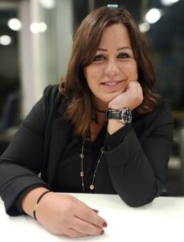

Welcome to Sayd — since 2012 the leading platform for Lebanese and Arab hunters, masters of land and sea, and for everyone who loves hunting and nature.

Warm greetings, and welcome to our magazine Sayd, the leading platform for Lebanon’s and the Arab world’s elite hunters — masters of the land and the sea — and for lovers of hunting and nature since 2012. We are here to take you on an engaging journey into the world of hunting, where excitement and adventure meet the conservation of nature and ecological balance.
We open a new page of exploration and learning in hunting and the environment. We share success stories and challenges in sustainable hunting and environmental protection, and we spotlight the latest developments and research that deepen awareness and help safeguard this natural wealth for future generations.
This magazine reflects our ongoing effort to understand more deeply how human activities affect ecosystems — and the consequences for hunting and for conserving biodiversity. We offer distinctive content: the latest news, articles, and reports from the worlds of hunting and nature.
Through our articles, research, and investigations we will explore many facets of sustainable hunting and highlight modern techniques and practices that strengthen the sustainable management of natural resources. We will also discuss the challenges facing environmental protection and the efforts made to achieve sustainability, with attention to scientific and technological innovations that help reach those goals.
We aim to be a trusted source of knowledge in this field, and to encourage dialogue and cooperation among scientists, environmentalists, and hunters. Let us begin this inspiring journey together, so that we all contribute to a better future for our planet and for generations to come. Join our diverse community of hunters and adventurers, and discover outstanding hunting grounds and photographic approaches that celebrate nature’s beauty and diversity.
Editor-in-Chief: Jocelyne Bourached Al-Boustany
Website: https://sayd-magazine.com/
Facebook: https://www.facebook.com/SaydMagazine/